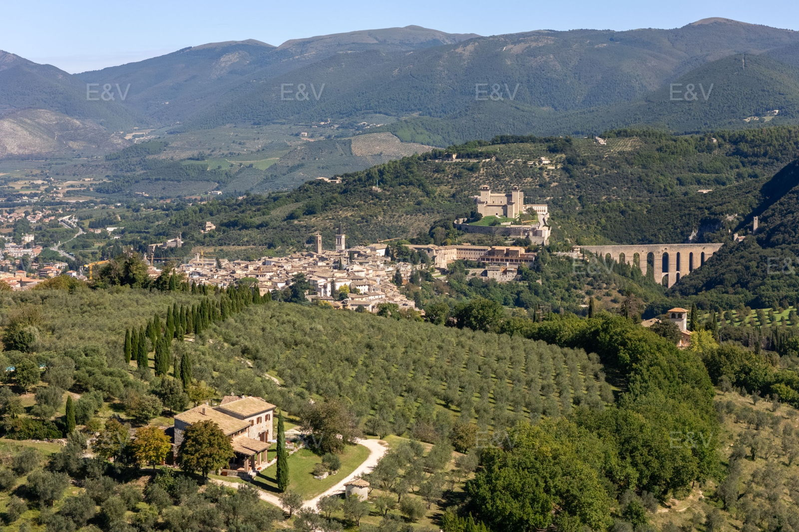

€1.100.000
Spoleto, Umbria, Italy
Open the listingHilltop Spoleto farmhouse from a typical late-18th-century Umbrian masseria fabric, renovated with wooden beams, terracotta floors and antique fireplaces across five characteristic apartments on 22 ha of woods, olives and walnuts — old-meets-new Umbrian character with a private infinity pool.
Opened 10 Sep 2026 via E&V expose __NEXT_DATA__ (EN). salesPrice €1100000. 9 bed / 6 bath / ~492 m² / plot 220000. Private pool verified on expose. Shop=Engel & Völkers Perugia. Locale Spoleto. UUID/ref deduped against board + 09-10 existing files + prior keepers.